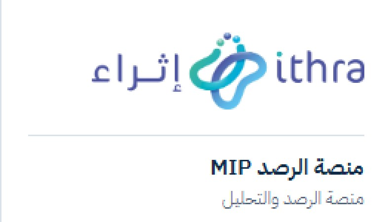
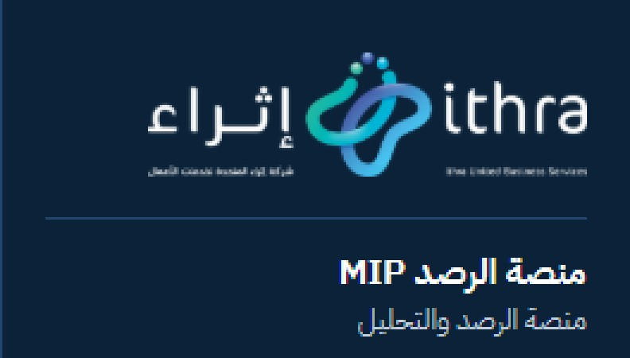

الخلاصة
لقطتا «قبل» و«بعد» التُقطتا بالأداة نفسها، على البيانات نفسها، وبالمقاسات والانتظار نفسها. «قبل» يعمل من نسخة منفصلة عند الالتزام b0ac8ab، و«بعد» من فرع الهوية، والاثنان متصلان بواجهة الاختبار المعزولة نفسها.
7 أقسام · 20 زوجًاالدخول، لوحة التحكم، الطابور، الرصد المباشر، القائمة والرأس، الإعدادات، الجوال — فاتح وداكن
0 تمرير أفقي · 0 أخطاء صفحة16 صفحة × وضعان × 4 مقاسات (390 / 768 / 1280 / 1440)
3 ملفات شعار رسميةمطابقة للأصل بايتًا ببايت (SHA-256)، دون أي تعديل أو قص
هل هو أكثر من تغيير ألوان؟ — تقييم صريح
ما تغيّر فعلًا
- هوية مؤسسية: الشعار الرسمي في القائمة وصفحة الدخول بمساحة الحماية، مع فصل واضح بين الشركة (إثراء المتحدة) والمنتج (منصة الرصد MIP).
- رأس الصفحة أصبح يعرض موقع المستخدم «منصة الرصد / الصفحة»، وحالة النظام صارت شارات حالة موحدة.
- القائمة الجانبية: مؤشر تركوازي للعنصر النشط، وأيقونات بسماكة موحدة، وقائمة فرعية بخط إرشادي، ووضع مطوي على سطح المكتب.
- صفحة الدخول أُعيد بناؤها: لوحة كحلية بالشعار المكدّس واسم المنتج بدل الأيقونة العامة.
- الوضع الداكن صار هوية حقيقية: Deep Navy كأساس، وأزرار تركوازية بنص كحلي كما في الدليل، بدل الرمادي المخضر السابق.
- نظام رموز مركزي (Tokens) للألوان والحالات والتركيز والخطوط، ومقياس خطوط تشغيلي، وحد أقصى للأوزان تمهيدًا لخط Cocon.
- ألوان الرسوم البيانية أعيد اختيارها من الهوية وفُحصت لعمى الألوان.
ما بقي كما هو عن قصد
- تخطيط الصفحات الداخلية ومسافاتها وتسلسلها البصري لم يُعَد بناؤه: كانت أصلًا منظمة، وإعادة بنائها خارج نطاق «تطبيق الهوية» وتؤثر على إنتاجية الفريق.
- لهذا يبدو الفرق في صفحات المحتوى الفاتحة هادئًا: التركوازي القديم (#139B87) كان قريبًا من تركوازي إثراء. الفرق الأوضح في القائمة والرأس والدخول والوضع الداكن.
- إن أردت طابعًا أكثر تميزًا في صفحات المحتوى، فالتوصيات في قسم «الاختلافات والتوصيات» (البند 7) قابلة للتنفيذ دون المساس بالوظائف.
مراجعة الشعار مقابل الدليل
تكبير ×3 لمنطقة الشعار كما تظهر فعليًا على الشاشة (بدقة 1x)، دون تنعيم.


| القاعدة في الدليل | التطبيق | الحالة |
|---|---|---|
| استخدام الملفات الرسمية فقط | 3 ملفات منسوخة كما هي؛ تحقق SHA-256 مطابق للأصل | مطابق |
| كامل الألوان على الأبيض / Light Neutral | القائمة الفاتحة وصفحة الدخول على الجوال | مطابق |
| العكسي على Deep Navy | القائمة الداكنة، ولوحة الدخول الكحلية (المكدّس) | مطابق |
| الحد الأدنى: أفقي 160px، مكدّس 110px | أفقي 184px (القائمة) و176px (الجوال)، مكدّس 232px؛ يُخفى في القائمة المطوية بدل التصغير | مطابق |
| مساحة الحماية X = ارتفاع حرف h | X ≈ 17px عند 184px؛ أقرب عنصر (الخط الفاصل / زر الإغلاق على الجوال) على بعد 18–32px | مطابق |
| لا تدوير، تشويه، تلوين، شفافية، ظلال | صورة بنسبتها الأصلية، دون مرشحات أو ظلال | مطابق |
| وضوح السطر التعريفي (Tagline) | في النسخة العكسية الأفقية يظهر السطر بارتفاع ≈ 3px عند 184px — غير مقروء على الشاشة رغم تجاوز الحد الأدنى | ملاحظة |
| تطابق النسختين بين الوضعين | الملف الكامل الألوان المورَّد بلا سطر تعريفي، والعكسي به سطر → يختلف شكل الشعار قليلًا بين الوضعين | ملاحظة |
| الرمز المنفرد (Favicon) | لم يُورَّد ملف الرمز؛ لم يُقص من الشعار الأفقي، فلا توجد أيقونة للمتصفح | ينتظر ملفًا |
الألوان الثلاثة الإضافية
ليست ألوانًا جديدة في الهوية، بل درجات من الأزرق الكحلي والرمادي الرسميين (الصبغة نفسها 210–214°)، أُضيفت لأسباب وظيفية.
| اللون | اشتقاقه | الاستخدام | التباين | الحكم |
|---|---|---|---|---|
| #52637A | Text Gray #6B7C93 أغمق بدرجة (HSL 214° / 20% / 40%) | النص الثانوي الصغير في الوضع الفاتح | 6.1:1 على الأبيض · 5.7:1 على Light Neutral | متوافق وضروري الدليل يقصر Text Gray (4.3:1) على 24px فأكبر |
| #12304F | بين Deep Navy و Royal Blue Depth (HSL 210° / 63% / 19%) | البطاقات والحقول في الوضع الداكن | أبيض 13.4:1 · تركوازي 5.3:1 · #C5D1DE 8.7:1 | متوافق يفصل البطاقة عن خلفية Deep Navy دون ظلال ثقيلة |
| #0B2239 | Deep Navy أغمق بدرجة (HSL 210° / 68% / 13%) | خلفية القائمة الجانبية في الوضع الداكن | تركوازي 6.4:1 · #C5D1DE 10.4:1 | اختياري يمكن استبداله بـ Deep Navy الرسمي تمامًا مع الإبقاء على الحد الفاصل |
ألوان الرسوم البيانية (تركوازي، برتقالي، أزرق، وردي) ألوان بيانات وليست ألوان واجهة؛ اجتازت فحص التمييز لعمى الألوان في الوضعين، ولا تستخدم البنفسجي #4A54AE.
بقايا ألوان أو خطوط غير موحدة
فحص آلي لكود الواجهة على فرع الهوية. لم يُعدَّل شيء منها في هذه المراجعة.
| العنصر | المواضع | الأثر | التوصية |
|---|---|---|---|
| نصوص الحالات بألوان Tailwind الافتراضية (red / amber / emerald) | 149 استخدامًا؛ 110 منها بلا بديل للوضع الداكن (أكثرها: تصنيف التفاعلات 19، إدارة المواضيع 13، الإشعارات 11) | على البطاقة الداكنة: red-600 = 2.8:1، emerald-600 = 3.6:1؛ وعلى الأبيض: amber-600 = 3.2:1 — دون AA | ربطها برموز الحالة --status-* (تعمل في الوضعين) |
| orange-500/600 | 7 (بطاقة المنشور، مختبر الاستعلام) | لون خارج الهوية؛ 3.6:1 على الأبيض | استبداله بـ --status-warning |
| teal-500/600 (ليس تركوازي إثراء) | 3 (شارة نوع في قاموس الكلمات) | درجة تركوازية أخرى؛ 3.7:1 على الأبيض | استبدالها بـ --accent-soft / --accent-ink |
| نص بحجم 10px | 15 موضعًا (الإشارات، بطاقات صغيرة) | أصغر من حجم التسمية التشغيلي (12px) | رفعها إلى 11–12px |
| font-mono | 2 (إدخال حسابات المؤثرين، قواعد التنبيه) | خط ثانٍ في حقلين تقنيين | مقبول للحقول التقنية، أو توحيده بالخط الرئيسي |
| Arial في زر X | 1 | رمز علامة X التجارية | يبقى كما هو (علامة طرف ثالث) |
| لون شريط الحصة عند 70% | 1 (#d97706 مباشرة في القائمة) | قيمة خارج نظام الرموز | استخدام رمز تحذير صلب |
الاختلافات الفعلية عن الدليل والتوصيات
| # | الاختلاف | السبب | التوصية | الأولوية |
|---|---|---|---|---|
| 1 | الخط ليس Cocon Next Arabic (احتياطي: IBM Plex Sans Arabic) | ملفات الخط المرخصة غير متوفرة | توفير ملفات الويب (300 و400) وتأكيد الترخيص؛ الدمج سطر @font-face وصنف واحد | عالية |
| 2 | السطر التعريفي في الشعار العكسي غير مقروء في القائمة، والنسختان غير متطابقتين | الملفات المتاحة | طلب نسخة أفقية عكسية بلا سطر تعريفي (مطابقة للملف الكامل الألوان) لاستخدامات الواجهة | متوسطة |
| 3 | لا توجد أيقونة متصفح (Favicon) | ملف الرمز غير متوفر | طلب ملف الرمز الرسمي (PNG/SVG) من التسويق | متوسطة |
| 4 | النص الأساسي بوزن 400 لا 300 | وضوح البيانات الكثيفة على الشاشة | الإبقاء على 400 للنص والجداول، و300 للأوصاف فقط (المطبّق حاليًا) | للاعتماد |
| 5 | عناوين بوزن 600 (لا 400) | الخط الاحتياطي أخف من Cocon | تتحول تلقائيًا إلى 400 عند توفر Cocon | مؤقت |
| 6 | ثلاث درجات مساعدة (#52637A، #12304F، #0B2239) | التباين وفصل الطبقات | اعتمادها، أو استبدال خلفية القائمة الداكنة بـ Deep Navy الرسمي | للاعتماد |
| 7 | صفحات المحتوى تحتفظ بتخطيطها السابق | الحفاظ على الإنتاجية ونطاق المهمة | تحسينات اختيارية: عنوان قسم بخط تركوازي قصير، توحيد زوايا البطاقات 16px، رفع الأحجام الصغيرة، استخدام التدرج التركوازي لزر الإجراء الرئيسي في كل صفحة فقط | اختياري |
| 8 | ألوان الحالات الافتراضية في 110 موضعًا دون بديل داكن | سابق للهوية | ترحيلها إلى رموز الحالة (لا يغيّر أي منطق) | متوسطة |
بانتظار موافقتك
- التصميم العام للقائمة والرأس والدخول والوضعين الفاتح والداكن.
- الخط: توفير ملفات Cocon Next Arabic المرخصة، أو اعتماد IBM Plex Sans Arabic مؤقتًا.
- ملفات إضافية من التسويق: الرمز المنفرد، ونسخة أفقية عكسية بلا سطر تعريفي.
- الدرجات الثلاث المساعدة (أو استبدال خلفية القائمة الداكنة بـ Deep Navy).
- وزن النص 400 للنصوص والجداول بدل 300.
- تنفيذ التصحيحات في البندين 8 و«بقايا قديمة» (ألوان الحالات، البرتقالي، تركوازي Tailwind، نص 10px) على فرع الهوية قبل الدمج.
- التحسينات الاختيارية لصفحات المحتوى (البند 7)، أو الاكتفاء بالمستوى الحالي.